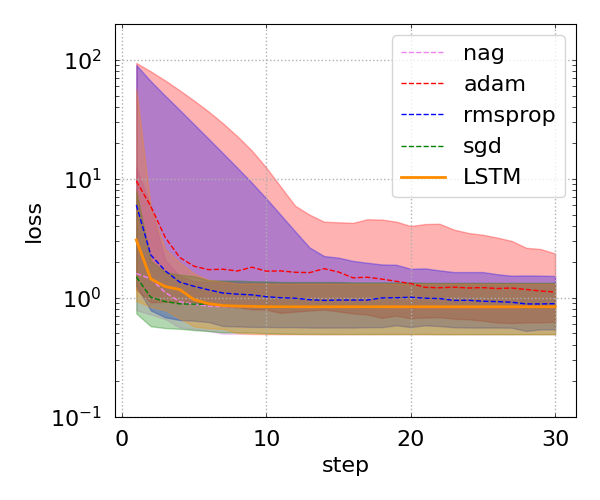
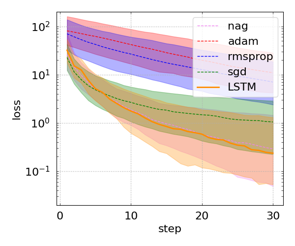

Paper
"Learning to learn by gradient descent
by gradient descent" (Andrychowicz et al., 2016)
Code
See below for a summary of the implementation.
Context
Fitting models to data constitutes a major part of scientific research. One of the most basic and universal examples is the linear model \(y=mx+b\), where \(x\) and \(y\) are the independent and dependent variables, respectively, and \(m\) and \(b\) are the model parameters (a.k.a. the slope and intercept). Given a set of \(N\) data points \((x_i, y_i)\), \(i=1,\ldots\,, N\), the best-fit values of \(m\) and \(b\) are found through optimization. For example, in the case of negligible uncertainties, this reduces to minimizing the function
$$
f(\boldsymbol{\theta})=\sum\limits_{i=1}^{N}\left(mx_i+b-y_i\right)^2\,,
$$
where \(\boldsymbol{\theta}={m,b}\) is the set of parameters.
For this simple function, it is easy to find the best-fit values of the slope and intercept analytically. However, this is often not the case for more complex functions, and the optimization must be performed numerically. One of the classical numerical techniques is gradient descent (GD), which starts with an initial guess \(\boldsymbol{\theta}^{(0)}\) and iteratively applies the update rule
$$
\boldsymbol{\theta}^{(k+1)} = \boldsymbol{\theta}^{(k)} - \alpha\nabla_\boldsymbol{\theta}f\left(\boldsymbol{\theta}^{(k)}\right)
$$
until a reasonable approximation of the optimal point is reached. Here, \(\alpha\) is a tunable parameter that can be adjusted to achieve faster convergence.
However, there is no universal algorithm that works equally well for all optimization problems. Training a neural network (NN) is a prime example where altermative optimization algorithms outperform classical GD. In the case of a NN, the function being optimized (the optimizee) is the loss function which quantifies the discrepancy between the networks's predictions and the ground truth.
Main idea
The Authors suggest delegating the optimization process to another NN – referred to as the optimizer – rather than manually designing an effective optimization algorithm. In this approach, the standard update rule is modified as follows:
$$
\boldsymbol{\theta}^{(k+1)} = \boldsymbol{\theta}^{(k)} + \mathbf{g}\left[\phi;\nabla_\boldsymbol{\theta}f\left(\boldsymbol{\theta}^{(k)}\right)\right]\,,
$$
where \(\mathbf{g}\) represents a single cell of a recurrent neural network (RNN) with parameters \(\phi\). (Additional update rules for the memory states of the RNN are implied.) Since the gradient of an optimizee (i.e., the function being optimized) is still expected to carry important information, it is passed into the RNN cell as a separate input. The iterative optimization process is thus interpreted as a sequence of the cells which form the RNN. The loss function for training the optimizer itself is given by the sum
$$
\sum\limits_{k=0}^{M}\Vert f\left(\boldsymbol{\theta}^{(k)}\right)\Vert\,,
$$
where \(M\) is the number of optimization steps.
Reproduction
I applied the main idea of the paper to two simple optimization problems:
- linear regression without an intercept, \(f(m)=\sum\limits_{i=1}^{N}(mx_i-y_i)^2\) (not considered in the paper),
- quadratic functions \(f(\boldsymbol{\theta})=\left(W\boldsymbol{\theta}-\mathbf{y}\right)^{\rm T}\left(W\boldsymbol{\theta}-\mathbf{y}\right)\), where \(W\) is a \(10\times 10\) matrix, \(\boldsymbol{\theta}\) is a \(10\times 1\) vector of parameters, and \(\mathbf{y}\) is a \(10\times 1\) vector (Section 3.1 of the paper).
The optimizees are implemented as Keras custom layers that inherit from keras.Layer. Each optimizee defines two methods: (i) call(), which returns the values of the function being optimized, and (ii) gradient(), which returns the gradient computed using tensorflow.GradientTape(). The constructors of the optimizees also accept an initializer as an argument. The initializers serve two purposes: first, to produce an initial guess for the optimizer; and second, to support data generators – implemented as subclasses of keras.utils.Sequence – in generating mock data for training the RNN-based optimizer.
The optimizers themselves are implemented as Keras custom models that inherit from keras.Model. Conventional optimizers (such as gradient descent, Adam, etc.) are encapsulated in the LocalOptimizer model, while the RNN-based optimizer is implemented as the GlobalOptimizer model. The latter consists of a sequence of RIM blocks (in reference to Recurrent Inference Machines), with each block composed of two LSTM cells with 20 neurons each and using the tanh activation function, followed by a linear Dense layer with a single output. If an optimizee has more than one parameter, the RIM block is applied elementwise.
The LSTM opimizers for both models were trained using 100 iterations for training, 30 for validation, and 30 for testing ("production"). They were trained over 20 epochs, with 100 steps per epoch, using a batch size of 64, and the Adam optimizer with a learning rate \(0.1\). The size of both training datasets was \(1024\times 10\) generated with the respective initializers:
- Linear regression: the slope is randomly sampled as \(m=\tan^{-1}{\beta}\), where \(\alpha\) is sampled uniformly from the interval \([-(\pi/2-\epsilon), \pi/2-\epsilon]\) (I used \(\epsilon=0.1\)),
- Quadratic functions: the elements of both \(W\) and \(\mathbf{y}\) are sample from the standard normal distribution.
Benchmarks
Linear regression
I used the following dataset:
$$
x\in{3.46, 3.42, 3.24, 1.05, 0.31, 3.79, 2.46, 0.01, 3.64, 3.94}\,,
$$
$$
y\in{7.35, 6.49, 6.24, 2.81, 1.32, 7.08, 4.54, -1.79, 8.96, 7.65}\,,
$$
wuth the analytical optimal value of the slope being \(m_{\rm opt}\approx 2.0341\). The GD with a learning rate \(\alpha=0.01\) and 30 iterations gives the same value for the same floating point precision. The value inferred by the LSTM optimizer is \(m\approx 2.0340\), which deviates from the analytical value by \(10^{-4}\). The comparison between the LSTM optimizer and some of the conventional optimizers is shown in the figure below. It appears that, for this particular optimization problem, GD is the best of the conventional optimizers, and the LSTM optimizer was trained to be as efficient.

Figure 1: Comparison between the LSTM optimizer and some of the conventional optimizers. The solid lines show the median value of the loss over realizations of the initial guess.

Figure 2: Comparison between the LSTM optimizer and some of the conventional optimizers. The solid lines show the median value of the loss over realizations of the initial guess.